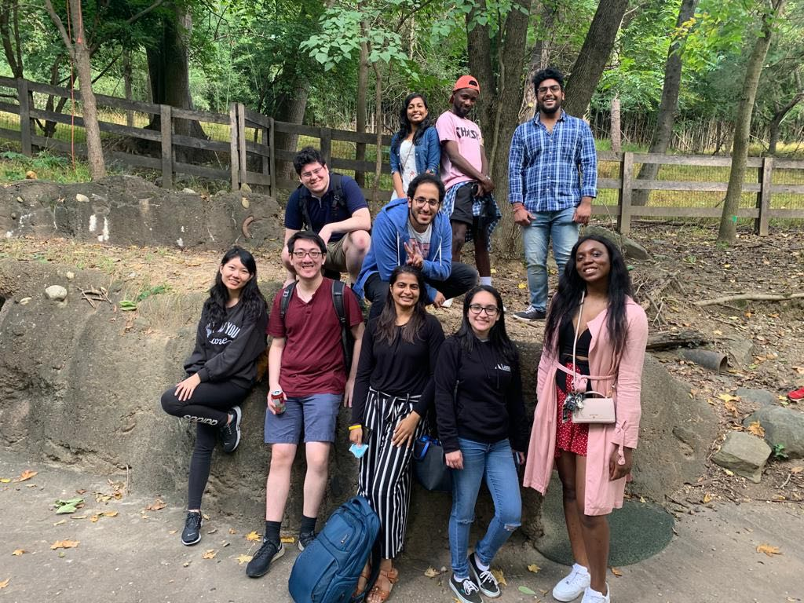
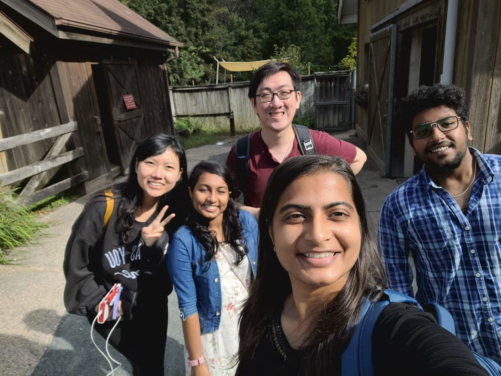
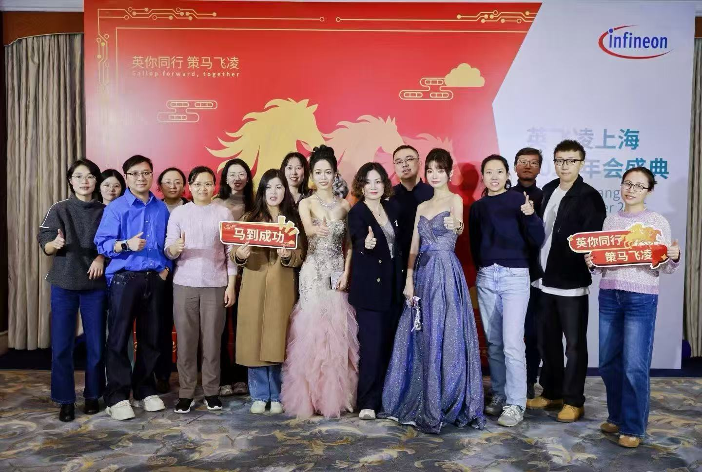
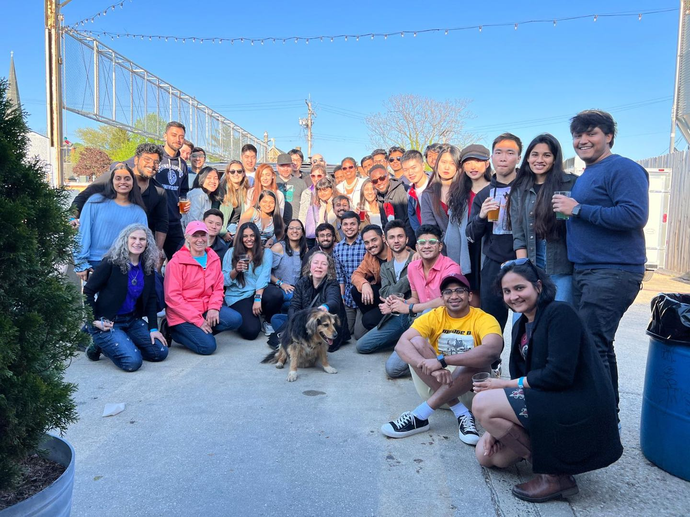
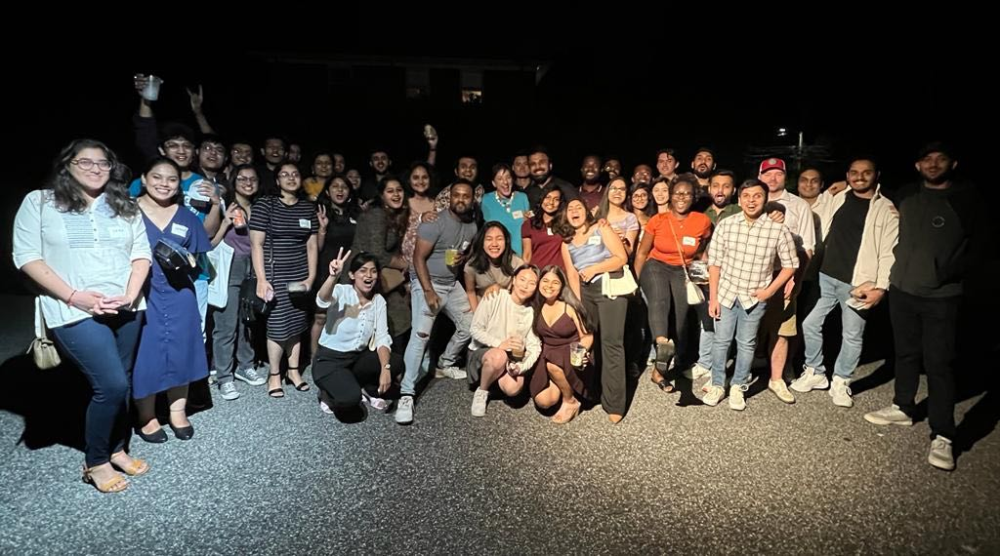

Data professional with 3+ years of experience translating complex business processes into scalable internal technical solutions. Experienced in end-to-end solution delivery across requirements gathering, system design, data modeling, integration, automation, and production reliability
I am passionate about projects that bridge technology and business challenges, driving process improvements and delivering measurable value to customers.
Outside of work, I’m a hands-on builder who enjoys experimenting with AI-supported development and turning innovative ideas into practical solutions that simplify and automate everyday workflows
I thrive in environments that require effective communication and cross-departmental collaboration to achieve shared goals.





Hi, This is Zixuan Liu. I hold a Master’s degree in Engineering Management from Johns Hopkins University, with a focus on Operations Research and Data Science.
During my studies, I applied my knowledge in machine learning and data science to build an attribution model that
analyzed the increasing patient fall rates at the School of Medicine and provided actionable proposals based on the findings.
During the COVID-19 pandemic, I worked in Prof.Lauren Gardner’s research lab, where I built data science models to study multiple risk factors associated with
COVID-19 and developed models for mortality rate prediction. This experience sparked my deep interest in the real-world application of machine learning and data science.
I enjoy using data to uncover and investigate the root causes behind complex issues.
I am naturally inclined to think deeply and explore thoroughly—especially in ambiguous and unclear environments—where I strive to find a
path forward and then dig deeper into the problem space. This mindset has proven valuable in my professional career.
At Walmart, I was responsible for seller management and data analysis, which strengthened my B2B client communication, data-driven analytical thinking, and the ability to multitask and manage parallel problem-solving skills.
This role required me to work closely with sellers to understand their needs and support seller operations.
From onboarding sellers onto the platform to maintaining communication throughout the mid-term via phone and online channels, I gathered user feedback and pain points, which I organized into knowledge-base documentation.
Additionally, I used data analysis tools and dashboards such as Looker to provide sellers with targeted, data-driven recommendations.
I analyzed seller data, user behavior data, and order data to uncover hidden links between sellers and between sellers and orders.
This allowed me to identify potentially high-risk sellers and prevent fraudulent transactions, saving significant losses for both customers and the platform.
At Microsoft, I gained valuable experience with SaaS products, particularly in the AI domain, and how such tools can empower enterprise-level clients to drive business growth
,which deepened my understanding of SaaS B2B enterprise product models, strengthened my hands-on experience in client enablement, and reinforced my strong interest in business analysis.
This experience sparked my interest in analyzing real-world business challenges across different types of enterprises and deepened my understanding of practical business scenarios.
It also led me to reflect more deeply on the business models of software and tool-based companies.
The combination of coding, analytical thinking, and the application of modeling techniques to real-world business scenarios brings me great satisfaction.
It enables me to bridge theory and practice, and this alignment of skills and interests has allowed me to create meaningful impact through my work.
Tenacious, Studious and Positive.
My values & worldview:
I think people need to do something meaningful to live.
Finding the meaning of my life has always been my creed in life.
After reading many books and seeing many different landscapes,
I have never stopped to pursue the life that I want.
I think everyone must be gifted in some way, but it takes time and luck to find it.
I think human life is the process of finding and understanding ourself.
Through continuous experimentation and exploration, we will find our favorite and keep learning, so that we can really find the most suitable path for us
My Explore & Learn:
I have a strong interest in platform-based product such as new retail and travel&hospitality etc. I enjoy exploring the decision-making process
before a purchase- what factors drive users to place an order and what kind of products or service can deliver the best experience for customer.
I thrive on continuously asking "why" beyond the phenomena and applying first-principles thinking to solve the underlying problems.
My life & Hobbies: